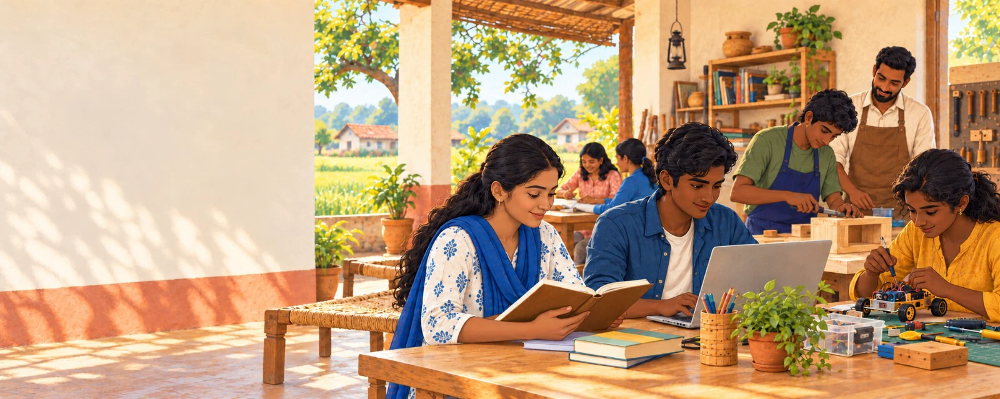
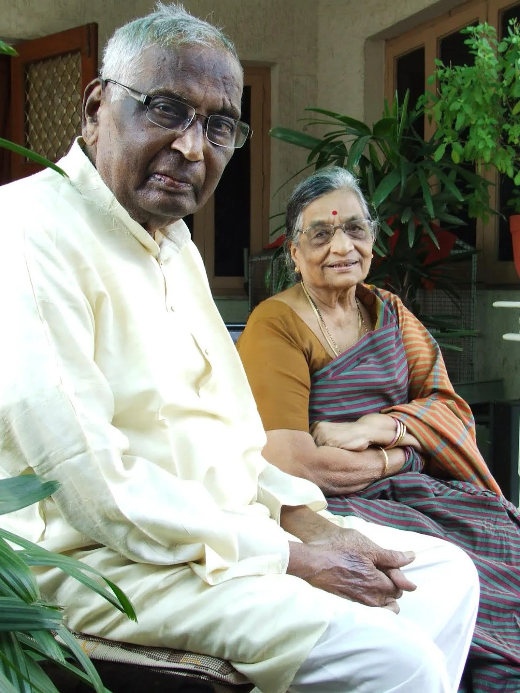

Help Learners Continue
School fees, books, uniforms, devices, transportation, tutoring, and other everyday support that can help learners stay in education.

Anantpushpa Foundation supports learners, families, and communities across India through practical educational assistance, vocational training, and locally grounded partnerships.

Anantpushpa Foundation is a family-led initiative inspired by a belief instilled in us by our parents: education can help a person realize their potential.
Our late father and our mother believed deeply in the power of education to build confidence, independence, dignity, and meaningful opportunity for individuals, families, and communities.
We hope to offer practical support in the places most meaningful to our family. Help with school fees, books, transportation, technology, or vocational training can help a learner continue their education and build a more secure future.
Our aim is simple: to make a sincere and lasting difference, one learner and one family at a time.
We hope to work with learners, families, and trusted local partners in practical ways.
School fees, books, uniforms, devices, transportation, tutoring, and other everyday support that can help learners stay in education.
Vocational, technical, digital, trade, and livelihood-focused learning can build confidence and greater independence.
Working with schools, educators, training providers, and community organizations where support can be genuinely useful.
We begin in the communities and regions most meaningful to our family, listening before deciding how to help.
We focus on the small but important needs that can help a learner stay in school, continue training, or gain useful skills.
We value local knowledge and work with care, dignity, and respect.
We hope each opportunity creates greater confidence, independence, and a stronger path forward.
While the Anantpushpa Foundation has applied for registration under Sections 12A and 80G of the Indian tax code, we are not currently seeking donations. At this early stage, we value your advice, encouragement, and good wishes as we build the Foundation thoughtfully and responsibly.
We would be glad to hear from you, whether you have advice to share, a partnership in mind, or simply want to learn more about our work.
Email the Foundation